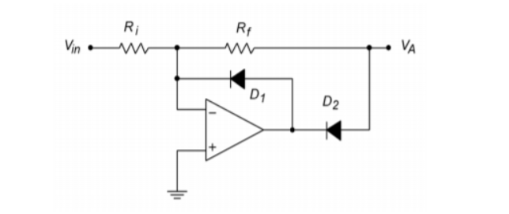
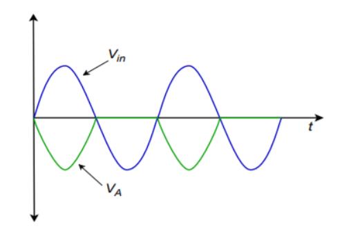

OP-Amp
Today I want to speak about op-amps. These wonderful, but mysterious components, we have heavely often appearing in circuit schematica of analog or analog / digital hybrid circuits. We want to demistify these components.
There are two basic thumb rules when handling ideal op-amp circuit. (Real-world op-amp circuits are a bit more complicated, but we will discuss this later).
\[ V_{out} = A (V_{in+} - V_{in-}) = \] in short this goes to
\[ V_{in+} = V_{in-}\]
The non-inverting amplifier
The non-inverting amplifier is simple and easy to calculate: The Amplification A is the output voltage divided by the input voltage, which can be computed as follows:
\[ A = \frac{U_{out}}{U_{in}} = \frac{R1 + R2}{R1}=1 + \frac{R2}{R1}\]
\[U_{in}= 5V; R_{1} = 100 k\Omega; R_{2} = 100 k\Omega \]
\[ \frac{U_{out}}{U_{in}} = 1 + \frac{R2}{R1}\]
\[ U_{out} = ( 1 + \frac{R2}{R1}) \cdot U_{in} = ( 1 + \frac{100k\Omega}{100k\Omega}) \cdot 5V = (1 + 1) \cdot 5V = 10V\]
\[ A = 2 \]
The voltage follower
A special case of the non-inversting amplifier is the voltage follower. A voltage follower also called impedance converter is used to buffer and decouple a stage from its previous stage. It has a low impedance on the input but a high impedance on the output. So this is used so that later stages do not burden previous stages in terms of voltage.
The (inverting) rectifier
Another small circuit example is the inverting rectifier. It only lets pass the negative half-wave of an alternating sine current. (See also: here )


To be continued…